Créer des schémas de métadonnées — Un guide pour les data stewards
Contour vous permet de concevoir des schémas de métadonnées personnalisés de manière visuelle — en faisant glisser ou en cliquant des widgets de formulaire sur une zone de travail — et de les exporter sous forme de formes SHACL conformes aux standards, avec des annotations de formulaire DASH. Le résultat s'intègre directement dans un FAIR Data Point ou toute plateforme compatible avec SHACL.
Slogan de Contour : Visual schemas. Clean SHACL.
Ce guide s'adresse aux data stewards qui souhaitent définir quelles métadonnées leur communauté doit (ou peut) fournir pour un type de ressource donné — un jeu de données, une étude, un échantillon, un paquet logiciel — sans écrire de Turtle à la main.
Aucune installation, aucun serveur. L'éditeur est une page web unique et autonome. Ouvrez-la dans Chrome ou Edge (recommandé, pour l'enregistrement direct des fichiers) — Firefox et Safari fonctionnent également, avec un enregistrement de type téléchargement.
Table des matières
- Ce que vous construisez (concepts clés)
- L'interface en un coup d'œil
- Tutoriel : construire un schéma Jeu de données de zéro
- Étape 1 — Définir l'identité du schéma
- Étape 2 — Gérer les vocabulaires (préfixes)
- Étape 3 — Organiser le formulaire en groupes
- Étape 4 — Ajouter votre première propriété (un champ texte)
- Étape 5 — Définir la cardinalité et les contraintes de validation
- Étape 6 — Ajouter une description multiligne
- Étape 7 — Ajouter une propriété de type date
- Étape 8 — Ajouter un vocabulaire contrôlé (énumération)
- Étape 9 — Référencer une autre entité (IRI + classe)
- Étape 10 — Modéliser un sous-objet avec une forme imbriquée
- Étape 11 — Prévisualiser le formulaire de saisie
- Étape 12 — Examiner le SHACL généré
- Étape 13 — Enregistrer et exporter
- Travailler directement avec le code (l'onglet Code SHACL)
- Vérifier votre travail (le panneau Problèmes)
- Fonctionnalités avancées (modélisation avancée)
- Référence
- Recettes — schémas de modélisation courants
- Conseils et dépannage
1. Ce que vous construisez (concepts clés)
Un schéma de métadonnées dans cet outil est une NodeShape SHACL : la description de ce à quoi ressemble un enregistrement valide d'un type donné. Voici quelques termes que vous rencontrerez tout au long du guide :
| Terme | Ce que cela signifie pour vous |
|---|---|
| NodeShape | Le schéma lui-même — p. ex. « ce qu'un enregistrement de type Jeu de données doit contenir ». |
Classe cible (sh:targetClass) |
Le type RDF auquel le schéma s'applique, p. ex. dcat:Dataset. Les enregistrements de ce type sont validés au regard de votre schéma. |
Propriété (sh:property) |
Un champ unique — titre, éditeur, date d'émission, … Chaque propriété possède un chemin, un widget et des contraintes. |
Chemin de propriété (sh:path) |
Le prédicat RDF dans lequel le champ écrit, p. ex. dct:title. C'est le terme réellement stocké dans les métadonnées. |
Widget (dash:editor) |
Le contrôle de formulaire présenté à la personne qui saisit les métadonnées — une zone de texte, un sélecteur de date, une liste déroulante, etc. |
Groupe (sh:PropertyGroup) |
Une section visuelle qui regroupe des champs liés, p. ex. « Informations générales ». |
Préfixe (@prefix) |
Un alias court pour un espace de noms de vocabulaire, p. ex. dct: → http://purl.org/dc/terms/. |
Vous concevez tout cela visuellement ; l'outil écrit le SHACL pour vous.
2. L'interface en un coup d'œil
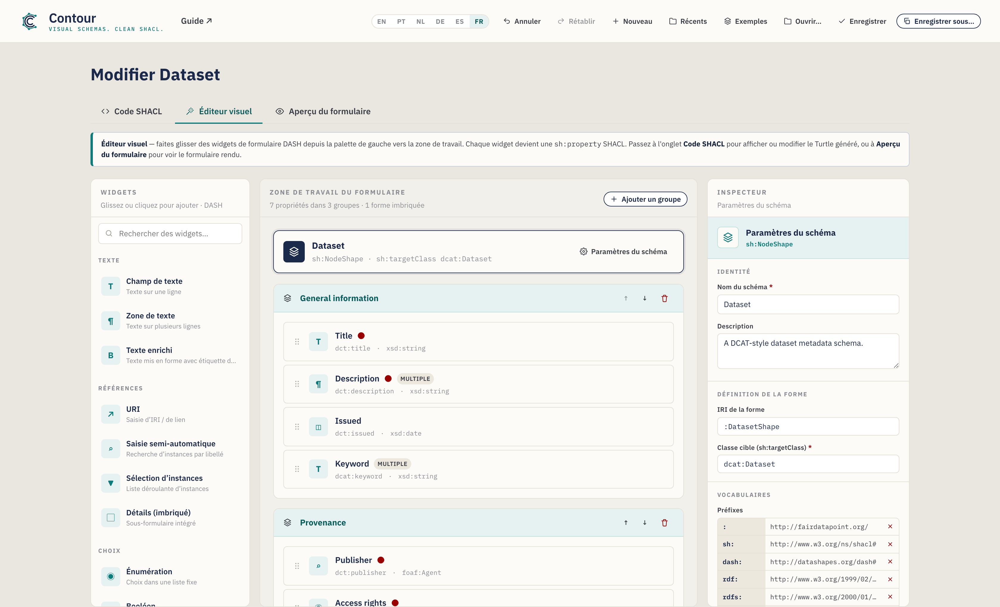
La fenêtre comporte trois onglets :
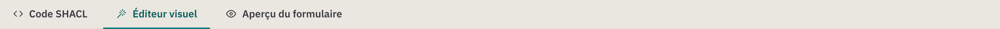
- Code SHACL — le schéma sérialisé. Turtle par défaut, avec autocomplétion ; les modifications sont synchronisées vers la zone de travail visuelle. Un sélecteur de syntaxe propose également N-Triples, TriG, Notation3 et une exportation en JSON-LD. C'est aussi ici que s'affichent les fichiers que vous ouvrez.
- Éditeur visuel — l'atelier de glisser-déposer (montré ci-dessus). C'est là que se déroule l'essentiel de votre travail.
- Aperçu du formulaire — un rendu réaliste du formulaire de saisie que produit votre schéma, pour tester l'expérience avant publication.
L'Éditeur visuel est divisé en trois colonnes :
| Colonne | Fonction |
|---|---|
| Widgets (à gauche) | La palette de contrôles de formulaire. Faites glisser l'un d'eux sur la zone de travail, ou cliquez simplement dessus (au clavier : focus + Entrée) pour l'ajouter. |
| Zone de travail du formulaire (au centre) | Votre schéma : la bannière de cible, les groupes, les propriétés et les formes imbriquées. |
| Inspecteur (à droite) | Les paramètres de l'élément actuellement sélectionné — le schéma, un groupe ou une propriété. |
Sous l'atelier se trouve une barre d'actions comportant un compteur de propriétés/groupes, un indicateur Problèmes (une vérification en direct de votre schéma — voir la §5) et des boutons Enregistrer / Copier. Pour voir le schéma sérialisé, basculez vers l'onglet Code SHACL ; pour voir le formulaire rendu, basculez vers Aperçu du formulaire.
L'en-tête regroupe les actions de fichier — Annuler / Rétablir, Nouveau, Récents, Exemples, Ouvrir, Enregistrer, Enregistrer sous — ainsi que le sélecteur de langue et un lien vers le Guide :
Votre travail est enregistré au fur et à mesure. Contour conserve un brouillon enregistré automatiquement dans votre navigateur, de sorte qu'un rechargement ou une fermeture accidentelle de l'onglet ne le perde pas — à votre retour, vous verrez une notification « Votre brouillon non enregistré a été restauré ». Annuler/Rétablir (ou Ctrl/Cmd+Z et Ctrl/Cmd+Maj+Z) parcourent vos modifications, et le menu Récents rouvre les schémas que vous avez enregistrés.
Langue de l'interface
L'interface de Contour est disponible en anglais (par défaut), portugais du Brésil, néerlandais, allemand, espagnol et français. Basculez avec le sélecteur de langue (EN / PT / NL / DE / ES / FR) dans l'en-tête — votre choix est mémorisé d'une session à l'autre. Si la langue préférée de votre navigateur est l'une d'elles, Contour s'ouvre automatiquement dans cette langue ; sinon, il revient à l'anglais. Seule l'interface est traduite ; le contenu de votre schéma (noms, descriptions, chemins de propriété) et le SHACL généré ne sont jamais modifiés ; le Turtle exporté est donc identique dans toutes les langues.
3. Tutoriel : construire un schéma Jeu de données de zéro
Nous allons construire un schéma de métadonnées Jeu de données dans le style DCAT. Chaque étape présente une fonctionnalité de l'outil, et à la fin vous aurez abordé toutes les capacités principales.
Contour démarre vierge afin que vous puissiez construire votre propre schéma de zéro — le titre de la page indique Nouveau schéma de métadonnées jusqu'à ce que vous le nommiez. Si vous préférez explorer un schéma terminé, le menu Exemples dans l'en-tête charge des modèles prêts à l'emploi (Jeu de données, Agent, Concept) ; l'exemple Jeu de données correspond à ce que nous construisons ci-dessous :
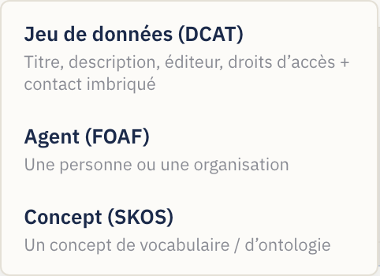
Tout au long du tutoriel, basculez vers l'onglet Éditeur visuel pour travailler. Pour commencer un nouveau schéma à tout moment, utilisez le bouton Nouveau.
Étape 1 — Définir l'identité du schéma
Cliquez sur la bannière du schéma en haut de la zone de travail (elle affiche Schéma sans titre jusqu'à ce que vous le nommiez), ou sur le bouton Paramètres du schéma. L'Inspecteur affiche alors les paramètres au niveau du schéma :
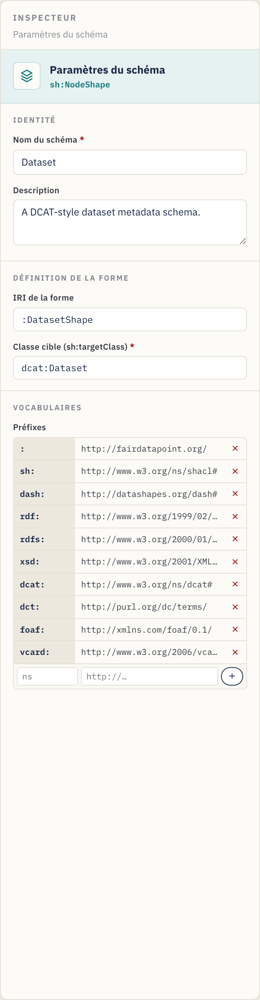
Renseignez :
- Nom du schéma — un libellé lisible, p. ex.
Dataset. (Une fois défini, le titre de la page passe de Nouveau schéma de métadonnées à Modifier Dataset ; nommez-le pour n'importe quel domaine — une classe d'ontologie, un catalogue — et le titre suit.) - Description — une phrase décrivant la finalité du schéma.
- IRI de la forme — l'identifiant de la forme, p. ex.
:DatasetShape. Le:initial utilise votre espace de noms par défaut ; vous pouvez conserver la valeur suggérée. - Classe cible (
sh:targetClass) — la classe RDF que ce schéma valide, p. ex.dcat:Dataset. Ceci est obligatoire pour que le schéma soit utile — c'est ce qui indique à une plateforme « applique ces règles aux enregistrements de type Jeu de données ».
Étape 2 — Gérer les vocabulaires (préfixes)
Toujours dans les paramètres du schéma, faites défiler jusqu'à Vocabulaires.
Les préfixes vous permettent d'écrire des termes courts comme dct:title plutôt
que des URL complètes.
L'éditeur est livré avec les plus courants déjà déclarés — sh, dash, rdf,
rdfs, xsd, dcat, dct, foaf et le préfixe vide par défaut :. Pour
ajouter le vôtre (par exemple un vocabulaire métier) :
- Dans la ligne vide en bas du tableau des préfixes, saisissez l'alias
(p. ex.
vcard) dans la première case. - Saisissez l'URL de l'espace de noms (p. ex.
http://www.w3.org/2006/vcard/ns#) dans la deuxième case. - Appuyez sur Entrée ou cliquez sur le bouton +.
Supprimez un préfixe avec le × situé à côté. Tout préfixe utilisé dans un chemin de propriété ou une classe doit être déclaré ici pour que le Turtle exporté soit valide.
Étape 3 — Organiser le formulaire en groupes
Les groupes (sh:PropertyGroup) sont les sections de votre formulaire. Sur une
zone de travail vierge, il suffit de faire glisser votre premier widget sur la
zone de travail et Contour crée le premier groupe pour vous — ou cliquez sur
Ajouter un groupe (en haut à droite de la zone de travail) pour créer une
section vide où déposer des widgets :
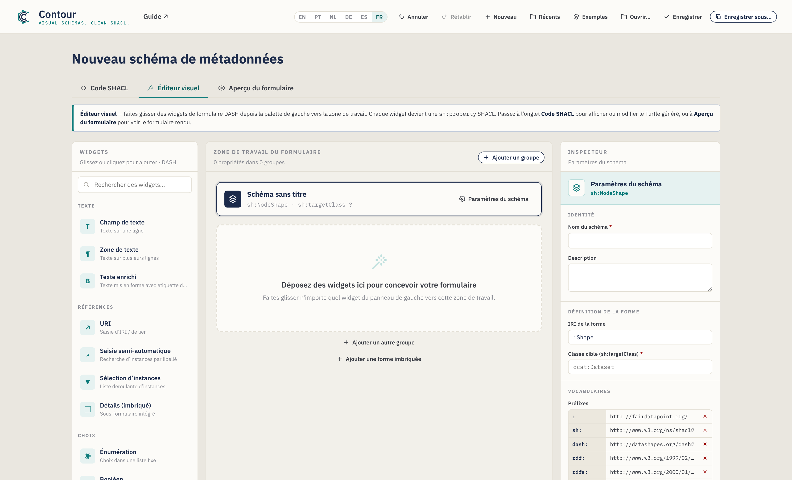
- Renommez un groupe en cliquant sur son titre et en saisissant — p. ex.
General information. - Réordonnez avec les boutons ↑ / ↓ de l'en-tête du groupe (cela renumérote les groupes pour vous).
- Supprimez avec l'icône de corbeille de l'en-tête du groupe.
Pour ce tutoriel, créez deux groupes : General information et Provenance.
Étape 4 — Ajouter votre première propriété (un champ texte)
Depuis la palette de Widgets à gauche, ajoutez un Champ texte au groupe General information — soit en le faisant glisser sur le groupe, soit en cliquant simplement dessus (il est ajouté au groupe sélectionné, ou au dernier). Les utilisateurs au clavier peuvent placer le focus sur un widget et appuyer sur Entrée. Les widgets sont organisés par catégorie (Texte, Références, Choix, Date et nombre) et consultables via la case de recherche en haut.
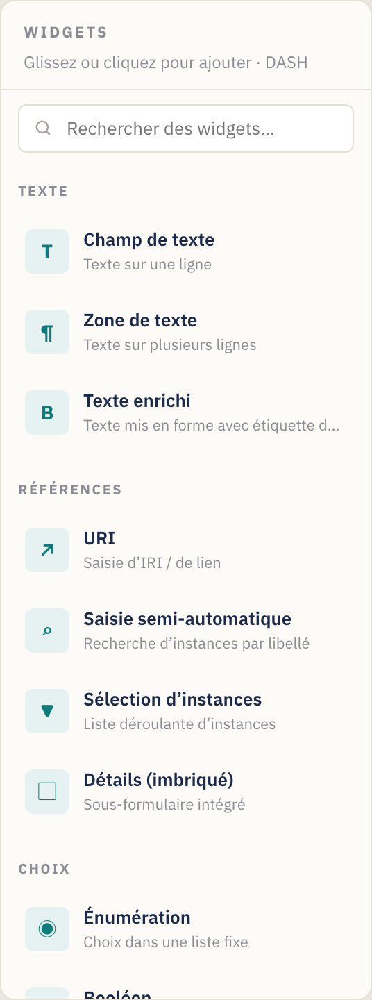
Lorsque vous ajoutez un widget, il devient une carte de propriété sur la zone de travail et est sélectionné automatiquement. Une carte de propriété affiche son libellé, son chemin, son type et des badges de statut (un point rouge pour obligatoire, un badge « multi » pour répétable) :

Chaque carte dispose de poignées pour réordonner par glissement (la poignée à gauche), dupliquer et supprimer (les icônes à droite, au survol).
Le nouveau champ étant sélectionné, l'Inspecteur affiche ses Paramètres de propriété. Définissez :
- Libellé (
sh:name) →Title— le libellé du champ affiché aux utilisateurs. - Description → texte d'aide facultatif (apparaît sous forme d'info-bulle ⓘ sur le formulaire).
- Chemin de propriété (
sh:path) →dct:title— le terme RDF dans lequel ce champ écrit. Définissez-le toujours ; le chemin d'espace réservé par défaut n'a pas de sens. À mesure que vous saisissez, Contour suggère des prédicats courants (et les préfixes que vous avez déclarés) ; choisissez-en un ou continuez à saisir le vôtre.
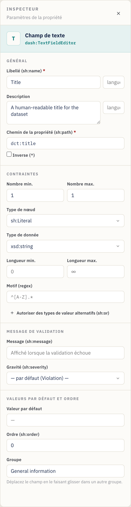
Étape 5 — Définir la cardinalité et les contraintes de validation
La section Contraintes de l'Inspecteur contrôle la validation. Pour Title :
- Nombre min. =
1, Nombre max. =1→ un titre exactement est obligatoire. (Un nombre min. ≥ 1 rend le champ obligatoire — notez le point rouge sur la carte et l'astérisque rouge dans l'aperçu du formulaire.) - Type de nœud =
sh:Literal(une valeur simple plutôt qu'un lien). - Type de données =
xsd:string. - Éventuellement Longueur min./max. et un Motif (une expression
régulière, p. ex.
^[A-Z].*pour exiger une majuscule initiale).
Aide-mémoire sur la cardinalité : Min 1 / Max 1 = obligatoire, valeur unique. Min 0 / Max 1 = facultatif, valeur unique. Min 1 / Max ∞ (laissez Max vide) = obligatoire, répétable. Min 0 / Max ∞ = facultatif, répétable.
Plage de valeurs (nombres et dates). Les champs Nombre, Date et Date et
heure affichent une section Plage de valeurs — définissez Min (≥) /
Max (≤) (inclusifs) ou les bornes exclusives (>) / (<). Les nombres
sont écrits tels quels (sh:minInclusive 1900), les dates comme des littéraux
typés ("2020-01-01"^^xsd:date).
Message de validation personnalisé (facultatif). La section Message de
validation vous permet de définir le texte qu'une plateforme affiche lorsque ce
champ échoue (sh:message) ainsi que sa gravité — Violation (par défaut),
Warning ou Info (sh:severity).
Étape 6 — Ajouter une description multiligne
Faites glisser une Zone de texte dans General information. Définissez :
- Libellé →
Description, Chemin →dct:description. - Nombre min. =
1, laissez Nombre max. vide (∞) afin que plusieurs variantes linguistiques puissent être fournies. La carte affiche désormais un badge multi, et l'aperçu du formulaire gagne un bouton + Ajouter.
Étape 7 — Ajouter une propriété de type date
Faites glisser un Sélecteur de date dans General information. Définissez :
- Libellé →
Issued, Chemin →dct:issued. - Nombre min. =
0, Nombre max. =1(facultatif, unique). - Le type de données prend par défaut
xsd:date, ce qui convient pour une date de calendrier. (Utilisez plutôt Date et heure si vous avez besoin d'un horodatage —xsd:dateTime.)
Étape 8 — Ajouter un vocabulaire contrôlé (énumération)
Passez au groupe Provenance et faites glisser un widget Énumération. Il
crée une liste déroulante restreinte à une liste fixe de valeurs (sh:in).
Dans l'Inspecteur, un éditeur de Valeurs autorisées apparaît :
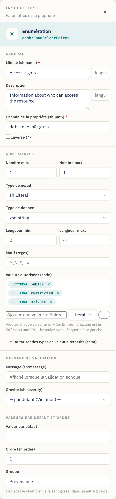
- Libellé →
Access rights, Chemin →dct:accessRights. - Dans Valeurs autorisées, saisissez chaque option et appuyez sur
Entrée :
public,restricted,private. Supprimez-en une avec son ×. - Nombre min./max.
1/1pour exiger exactement un choix.
Les valeurs sont exportées sous la forme
sh:in ( "public" "restricted" "private" ).
Valeurs littérales ou IRI. Chaque valeur autorisée porte une bascule littéral / IRI (la petite étiquette à sa gauche). Conservez littéral pour du texte simple comme
public; basculez sur IRI lorsque les choix sont des termes de vocabulaire contrôlé (p. ex.ex:Public, unskos:Concept) afin qu'ils soient exportés comme des IRI, et non comme des chaînes.
Étape 9 — Référencer une autre entité (IRI + classe)
Certaines propriétés pointent vers une autre ressource au lieu de contenir une valeur simple — par exemple, l'éditeur du jeu de données est une organisation, pas une chaîne. Faites glisser un widget Saisie semi-automatique dans Provenance. Il affiche une zone de recherche qui recherche les instances existantes.
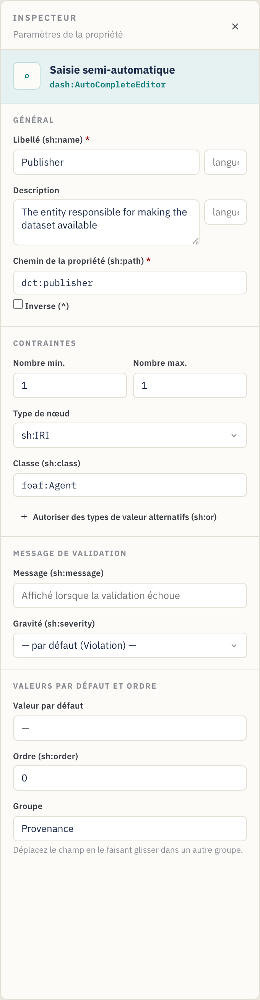
- Libellé →
Publisher, Chemin →dct:publisher. - Type de nœud =
sh:IRI(la valeur est un lien/identifiant). - Classe (
sh:class) →foaf:Agent— restreint le sélecteur aux instances de cette classe. (La case Classe n'apparaît que lorsque le type de nœud est basé sur des IRI.) - Nombre min./max.
1/1.
Autres widgets de référence : URI (lien libre), Sélection d'instances (liste déroulante d'instances). Utilisez celui qui correspond le mieux à la manière dont la valeur est choisie. La case Classe suggère des classes courantes à mesure que vous saisissez.
Avancé : une propriété peut aussi accepter soit un littéral soit un IRI (et des règles similaires du type « l'un de ces types ») via Types de valeur alternatifs (
sh:or), ou suivre une relation à l'envers avec un chemin Inverse (^) — voir la §6 Fonctionnalités avancées.
Étape 10 — Modéliser un sous-objet avec une forme imbriquée
Parfois, un champ est lui-même un petit objet structuré. Un point de contact, par exemple, possède son propre nom et son propre e-mail. Modélisez cela avec une forme imbriquée et le widget Détails (imbriqué).
- En bas de la zone de travail, cliquez sur Ajouter une forme imbriquée. Une
nouvelle forme apparaît sous le séparateur Formes imbriquées et est
sélectionnée. Dans l'Inspecteur, définissez son IRI de la forme (p. ex.
:ContactShape) et éventuellement une Classe cible (p. ex.vcard:Kind). Renommer l'IRI met automatiquement à jour chaque propriété qui la référence. - Faites glisser des widgets sur la forme imbriquée tout comme sur un
groupe — p. ex. un Champ texte
Full name(vcard:fn) et une URIEmail(vcard:hasEmail). - De retour dans un groupe, ajoutez un widget Détails (imbriqué). Dans son
Inspecteur, définissez Forme imbriquée (
sh:node) sur:ContactShape(la case propose vos formes imbriquées en suggestions).
Raccourci. Sur une propriété Détails, vous pouvez cliquer sur Créer et lier une forme imbriquée pour créer une nouvelle forme et y connecter
sh:nodeen une seule étape — puis il ne reste qu'à ajouter ses champs. La carte de propriété affiche le lien vers lequel elle pointe (p. ex.→ :ContactShape), et le panneau Problèmes signale une propriété Détails dont la cible est manquante.
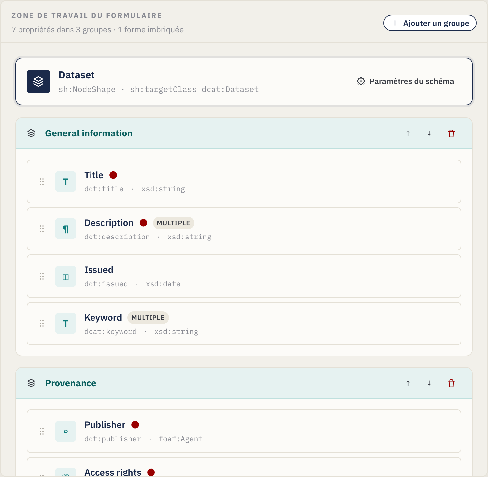
L'Inspecteur de la propriété Détails la relie à la forme imbriquée via
sh:node :
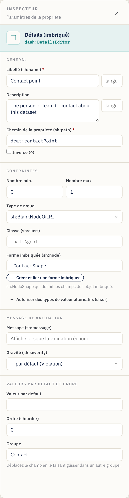
La carte de la forme imbriquée sur la zone de travail contient ses propres propriétés :

Étape 11 — Prévisualiser le formulaire de saisie
À tout moment, ouvrez l'onglet Aperçu du formulaire pour vérifier ce que
verra la personne qui saisit les métadonnées. L'aperçu reflète vos contraintes :
les champs obligatoires affichent un astérisque rouge, une petite puce de
cardinalité indique le nombre autorisé (p. ex. 1–3), les descriptions
deviennent des info-bulles ⓘ, les champs répétables obtiennent des boutons
+ Ajouter, les motifs / longueurs / plages sont appliqués aux saisies, le
texte avec balise de langue obtient une petite case de langue, tout message de
validation apparaît sous le champ, et les propriétés Détails affichent les
champs de leur forme imbriquée en ligne — à n'importe quelle profondeur
d'imbrication :
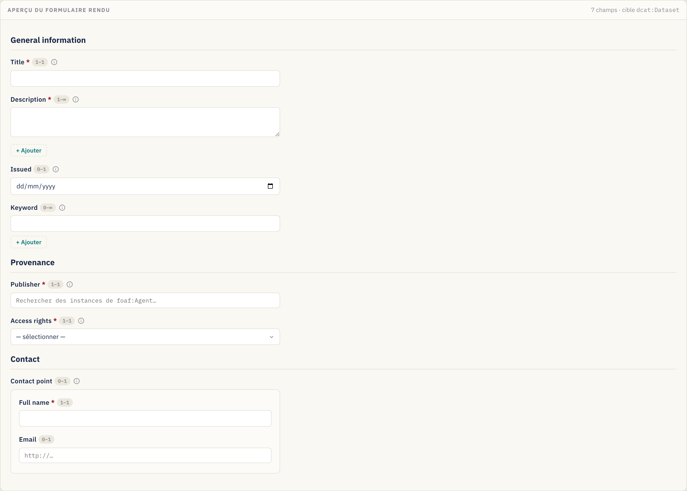
Cet aperçu est en lecture seule — il sert à valider la conception, non à saisir des données réelles.
Étape 12 — Examiner le SHACL généré
L'onglet Code SHACL affiche le Turtle généré à partir de votre conception (et permet de le modifier directement) :
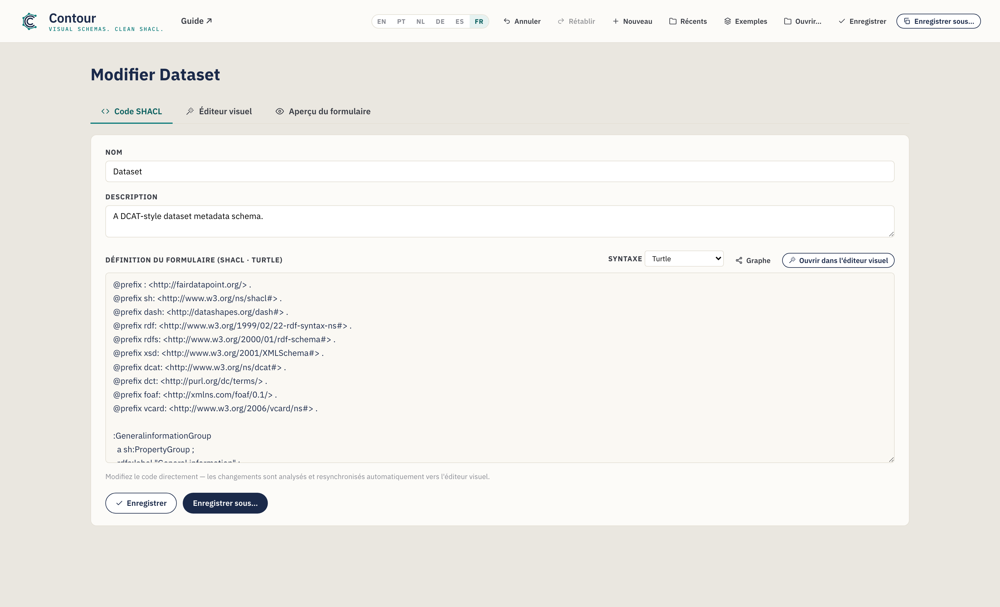
Tout ce que vous avez configuré visuellement se trouve ici — les déclarations
@prefix, les PropertyGroup, la NodeShape avec ses blocs sh:property et
toutes les formes imbriquées. Le bouton Copier le SHACL dans la barre
d'actions de l'Éditeur visuel place la sérialisation dans votre presse-papiers.
Utilisez le sélecteur de Syntaxe pour afficher ou exporter d'autres formats,
y compris JSON-LD (voir la
§4).
Étape 13 — Enregistrer et exporter
Enregistrez votre schéma (un fichier .ttl par défaut) :
- Enregistrer sous… — choisissez un nouveau nom et un nouvel emplacement de
fichier. L'extension suit la syntaxe sélectionnée (
.ttl,.nt,.trig,.n3ou.jsonld). - Enregistrer — réécrit dans le fichier que vous avez ouvert/enregistré en dernier (Ctrl/Cmd+S). Le bouton affiche brièvement Enregistré ! pour confirmer.
- Copier le SHACL — copie la sérialisation actuelle sans enregistrer de fichier.
- Récents (en-tête) — rouvre un schéma que vous avez enregistré plus tôt dans cette session.
Dans Chrome/Edge, le fichier est écrit directement sur le disque. Dans Firefox/Safari, l'éditeur recourt à un téléchargement normal. Le nom de fichier suggéré est dérivé du nom du schéma (p. ex.
dataset.ttl). Dans tous les cas, un brouillon enregistré automatiquement est conservé dans votre navigateur d'une session à l'autre.
Téléversez le .ttl obtenu dans votre FAIR Data Point (ou une autre plateforme
SHACL) en tant que schéma de métadonnées, et les enregistrements de la classe
cible seront validés — et les formulaires rendus — conformément à votre
conception.
4. Travailler directement avec le code (l'onglet Code SHACL)
Vous préférez écrire ou coller du SHACL à la main, ou vous devez partir d'une forme existante ? Utilisez l'onglet Code SHACL.
- Synchronisation bidirectionnelle. Les modifications du Turtle sont analysées et renvoyées automatiquement vers l'Éditeur visuel (après une pause dans la saisie). Inversement, tout ce que vous construisez visuellement apparaît ici.
- Autocomplétion contextuelle (Turtle). À mesure que vous saisissez,
l'éditeur suggère des prédicats SHACL, des types de nœud, des types de données
XSD, des éditeurs DASH, les groupes de propriétés déclarés et les lignes
@prefix. Utilisez ↑/↓ pour vous déplacer, Tab/Entrée pour accepter, Échap pour fermer.
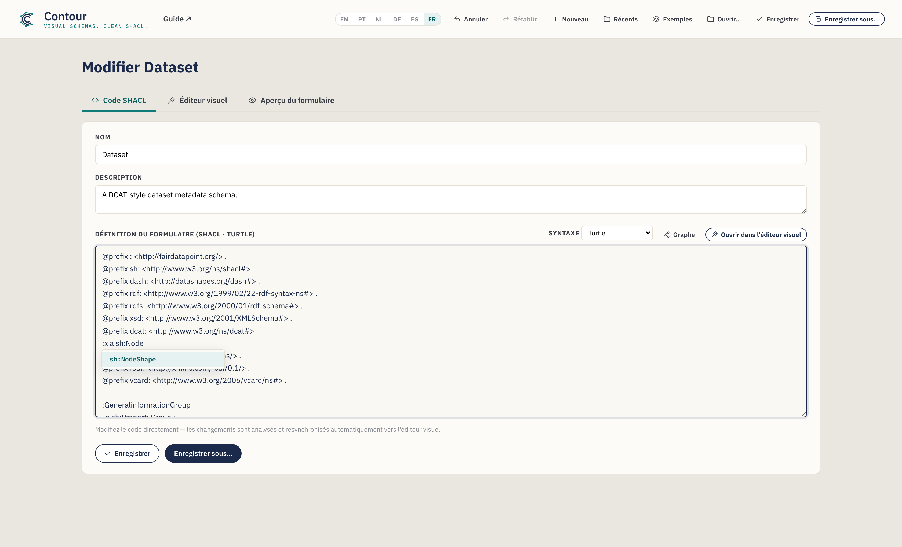
- Ouvrir un fichier existant. Ouvrir… dans l'en-tête charge un fichier
.ttl/.nt/.trig/.n3dans cet onglet, détecte sa syntaxe et l'analyse vers l'Éditeur visuel — un moyen rapide d'adapter un schéma existant. Si un fichier ne peut pas être analysé, un message en ligne pointe vers la ligne problématique ; vous pouvez tout de même modifier le texte brut. - Nom et Description du schéma disposent également de champs simples en haut de cet onglet.
Cliquez sur Ouvrir dans l'Éditeur visuel pour revenir à la vue de glisser-déposer.
Choisir une syntaxe (et exporter en JSON-LD)
Un sélecteur de Syntaxe dans cet onglet bascule la sérialisation entre
Turtle (par défaut), N-Triples, TriG, Notation3 et JSON-LD
(exportation). Les quatre premières sont entièrement modifiables — les
modifications sont synchronisées en retour. Le JSON-LD est en exportation
uniquement (il n'existe pas d'analyseur JSON-LD) : l'éditeur l'affiche en
lecture seule afin que vous puissiez le Copier ou l'Enregistrer sous un
fichier .jsonld, puis revenir au Turtle pour continuer à éditer.
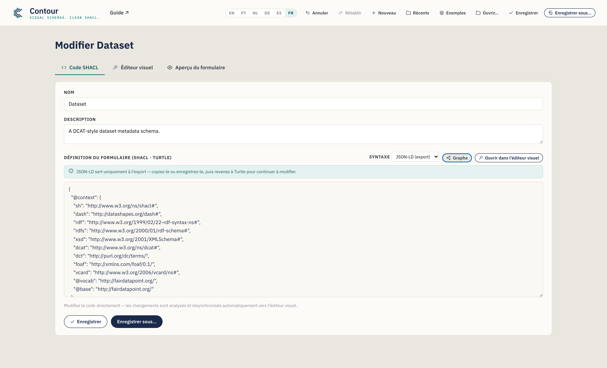
Les nouveaux schémas démarrent toujours en Turtle, et Enregistrer sous utilise l'extension correspondant à la syntaxe sélectionnée.
L'édition d'un schéma existant se fait sans perte
Contour analyse les fichiers avec un véritable moteur RDF ; ainsi, ouvrir,
modifier et enregistrer un schéma ne supprime jamais silencieusement les
parties qu'il ne modélise pas visuellement. Les constructions pour lesquelles
l'éditeur ne dispose pas d'un contrôle — par exemple sh:and, les formes de
valeur qualifiées ou des annotations supplémentaires — sont préservées
verbatim et réémises dans un bloc « Preserved » clairement commenté à la fin
de la sortie. Lorsqu'un fichier chargé contient de telles constructions, vous
verrez une brève notification dans cet onglet ; vos modifications aux parties que
Contour modélise effectivement sont appliquées comme d'habitude, et le reste
fait l'aller-retour intact.
Visualiser le graphe
Cliquez sur Graphe dans cet onglet pour ouvrir, dans une surcouche, une
visualisation en nœuds et liens du RDF du schéma — formes, nœuds de propriété,
classes et littéraux, reliés par leurs prédicats. Faites défiler pour zoomer,
faites glisser l'arrière-plan pour vous déplacer et faites glisser un nœud pour
le repositionner. Deux bascules maîtrisent le niveau de détail (toutes deux
activées par défaut) : Réduire les listes replie une liste sh:in/sh:or en
une seule puce, et Masquer les annotations retire les libellés et les
indications de formulaire (sh:name, dash:editor, sh:order, …) afin que la
structure ressorte. C'est un moyen rapide de voir le graphe des formes (ainsi que
toute forme imbriquée ou construction préservée) en un coup d'œil.
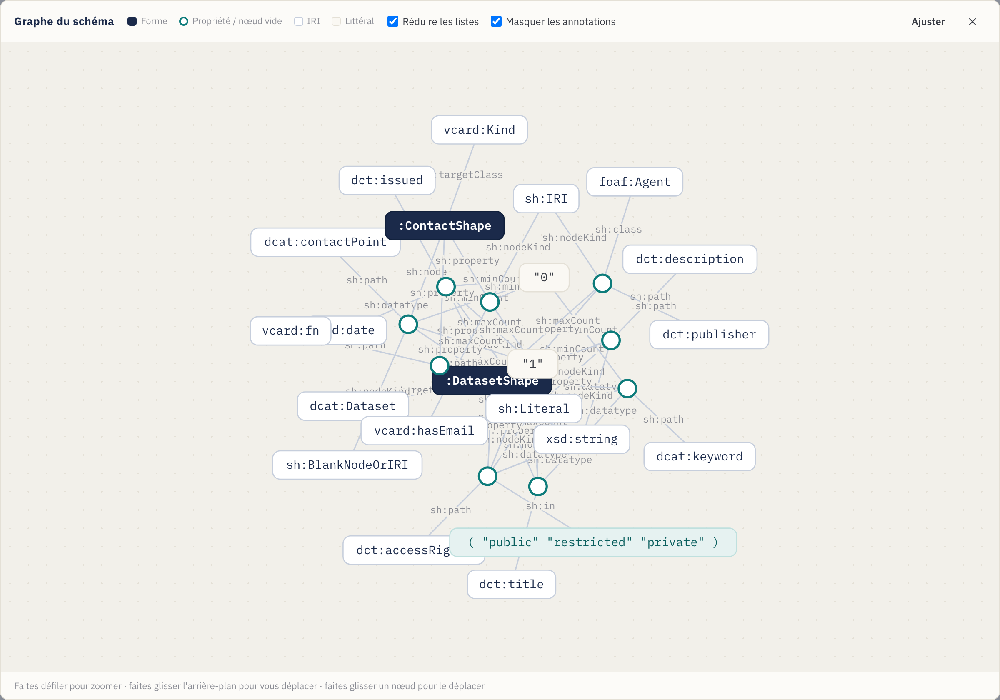
5. Vérifier votre travail (le panneau Problèmes)
À mesure que vous construisez, Contour vérifie le schéma en continu et résume les problèmes dans l'indicateur Problèmes de la barre d'actions de l'Éditeur visuel. Cliquez dessus pour développer la liste ; cliquez sur n'importe quel élément pour accéder directement à l'élément fautif.

Il signale des éléments tels que :
- une propriété sans chemin, ou des chemins en double dans le même groupe ;
- une propriété Détails dont la forme imbriquée est manquante ;
- un chemin, une classe, un type de données ou une classe cible utilisant un préfixe que vous n'avez pas déclaré ;
- une classe cible ou un nom de schéma manquant ;
- des formes imbriquées avec une IRI manquante ou en double.
Les problèmes sont non bloquants — ce sont des conseils, pas des barrières — mais les résoudre garantit que le SHACL exporté est bien formé et ne référence que des vocabulaires déclarés.
6. Fonctionnalités avancées (modélisation avancée)
Au-delà des widgets et contraintes de base, l'Inspecteur expose quelques contrôles avancés pour des schémas plus riches. Chacun est facultatif — utilisez-les lorsque votre modèle en a besoin.
Libellés en plusieurs langues
sh:name et sh:description peuvent porter une balise de langue, et vous
pouvez ajouter des traductions afin qu'un champ soit libellé dans plusieurs
langues. Dans la section De base, saisissez une balise (p. ex. en) dans la
petite case à côté du libellé ; un éditeur de traductions vous permet alors
d'en ajouter d'autres (pt → « Título », …). Chacune devient sa propre
déclaration avec balise de langue (sh:name "Title"@en, "Título"@pt), et
l'aperçu du formulaire affiche une case de langue sur le champ.
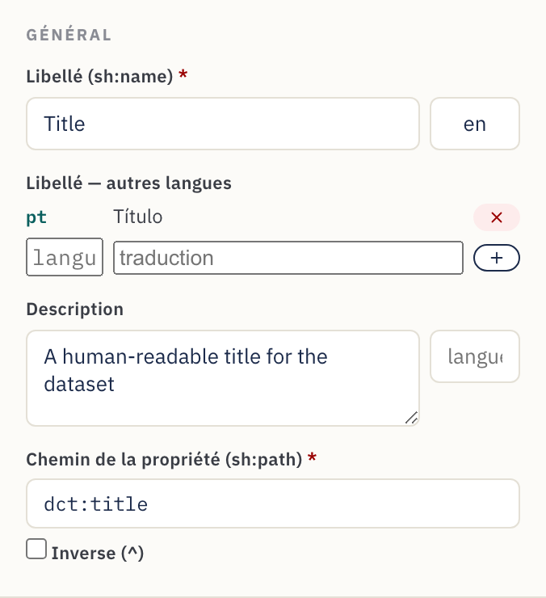
Plages numériques et de dates
Les champs Nombre, Date et Date et heure affichent un bloc Plage de valeurs
dans Contraintes. Définissez des bornes inclusives Min (≥) / Max (≤)
ou exclusives (>) / (<) — p. ex. une année de publication ≥ 1900. Les
nombres sont exportés tels quels (sh:minInclusive 1900) ; les dates comme des
littéraux typés ("2000-01-01"^^xsd:date).
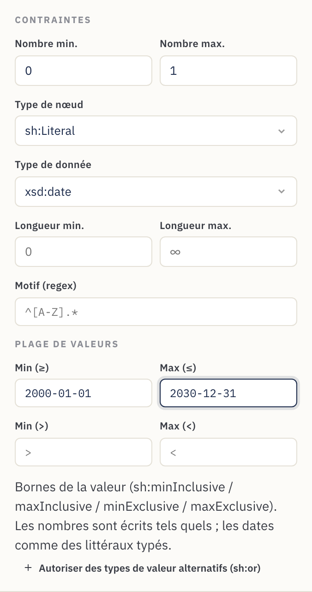
Messages de validation personnalisés
La section Message de validation définit le texte qu'une plateforme affiche
lorsqu'une valeur échoue à la règle (sh:message) ainsi que sa gravité —
Violation (par défaut), Warning ou Info (sh:severity). Utilisez-la pour
transformer un échec brut en conseil compréhensible pour le data steward.
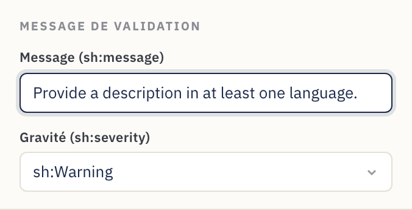
Types de valeur alternatifs (littéral ou IRI)
Certaines propriétés acceptent légitimement plus d'un type de valeur — un sujet
qui peut être du texte libre ou un IRI de vocabulaire contrôlé, par exemple.
Cliquez sur Autoriser des types de valeur alternatifs (sh:or) et listez les
branches (chacune un type de nœud, un type de données ou une classe). Cela
s'exporte sous la forme sh:or ( [ … ] [ … ] ). Les formes logiques plus riches
que Contour ne modélise pas sont tout de même préservées lors de l'aller-retour
(voir la §4).
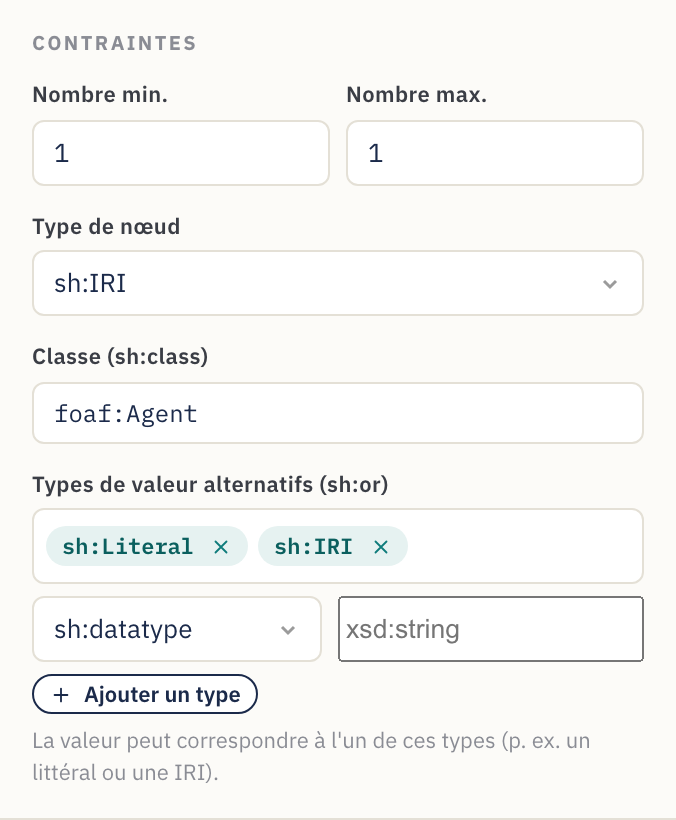
Chemins inverses
Cochez Inverse (^) à côté du chemin de propriété pour faire correspondre
une relation à l'envers — « les ressources qui pointent vers celle-ci » plutôt
que l'inverse. Cela s'exporte sous la forme sh:path [ sh:inversePath … ], et la
carte de propriété affiche le chemin avec un ^ en tête.
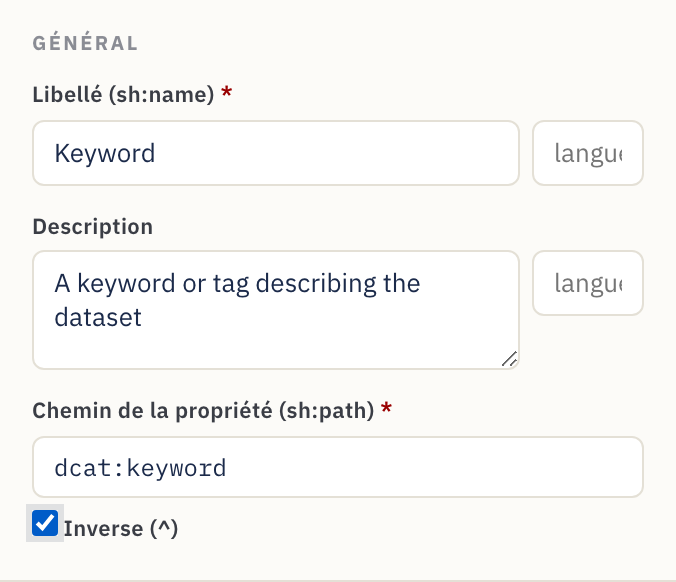
7. Référence
Catalogue des widgets
Chaque widget correspond à un éditeur DASH et à un type de nœud / de données par défaut judicieux.
| Widget | Éditeur DASH | Usage typique | Valeurs par défaut |
|---|---|---|---|
| Champ texte | dash:TextFieldEditor |
Texte sur une ligne | sh:Literal, xsd:string |
| Zone de texte | dash:TextAreaEditor |
Texte multiligne | sh:Literal, xsd:string |
| Texte enrichi | dash:RichTextEditor |
Texte formaté avec balise de langue | sh:Literal, rdf:HTML |
| URI | dash:URIEditor |
Lien / IRI libre | sh:IRI |
| Saisie semi-automatique | dash:AutoCompleteEditor |
Rechercher une instance par libellé | sh:IRI, sh:class foaf:Agent |
| Sélection d'instances | dash:InstancesSelectEditor |
Liste déroulante d'instances | sh:IRI |
| Détails (imbriqué) | dash:DetailsEditor |
Sous-formulaire intégré via une forme imbriquée | sh:BlankNodeOrIRI |
| Énumération | dash:EnumSelectEditor |
Choix dans une liste sh:in fixe |
sh:Literal, xsd:string |
| Booléen | dash:BooleanSelectEditor |
vrai / faux | sh:Literal, xsd:boolean |
| Sélecteur de date | dash:DatePickerEditor |
Date de calendrier | sh:Literal, xsd:date |
| Date et heure | dash:DateTimePickerEditor |
Horodatage | sh:Literal, xsd:dateTime |
| Nombre | dash:NumberFieldEditor |
Valeur numérique | sh:Literal, xsd:integer |
Les valeurs par défaut sont des points de départ — remplacez le type de nœud, le type de données ou la classe dans l'Inspecteur dès que votre modèle nécessite quelque chose de différent.
Référence des paramètres de propriété
Ce que chaque contrôle de l'Inspecteur écrit dans le SHACL :
| Champ de l'Inspecteur | Sortie SHACL | Remarques |
|---|---|---|
| Libellé | sh:name |
Le libellé du formulaire. Une balise de langue facultative + des traductions supplémentaires émettent un sh:name par langue. |
| Description | sh:description |
Texte d'aide / info-bulle ⓘ. Accepte aussi une balise de langue, avec traductions. |
| Chemin de propriété | sh:path |
Obligatoire. Le prédicat RDF. Inverse (^) émet [ sh:inversePath … ]. |
| Nombre min. | sh:minCount |
≥ 1 rend le champ obligatoire. |
| Nombre max. | sh:maxCount |
Vide = illimité (répétable). |
| Type de nœud | sh:nodeKind |
sh:Literal, sh:IRI, sh:BlankNode ou combinaisons. |
| Type de données | sh:datatype |
Affiché pour les types de nœud littéraux. |
| Classe | sh:class |
Affiché pour les types de nœud IRI ; restreint le type cible. |
| Forme imbriquée | sh:node |
Affiché pour Détails ; relie à une forme imbriquée. |
| Longueur min. / max. | sh:minLength / sh:maxLength |
Littéraux uniquement. |
| Plage de valeurs | sh:minInclusive / maxInclusive / minExclusive / maxExclusive |
Nombres et dates. |
| Motif (regex) | sh:pattern |
Littéraux uniquement. |
| Valeurs autorisées | sh:in ( … ) |
Choix d'énumération ; chaque valeur littérale ou IRI. |
| Types de valeur alternatifs | sh:or ( … ) |
« Accepter l'un de ces types » (p. ex. littéral ou IRI). |
| Message / Gravité | sh:message / sh:severity |
Texte de validation personnalisé + Violation / Warning / Info. |
| Valeur par défaut | sh:defaultValue |
Valeur pré-remplie. |
| Ordre | sh:order |
Ordre du champ au sein de son groupe. |
Contrôles au niveau du schéma et du groupe :
| Contrôle | Sortie SHACL |
|---|---|
| Nom du schéma | rdfs:label sur la NodeShape |
| IRI de la forme | le sujet de la NodeShape |
| Classe cible | sh:targetClass |
| Préfixes | déclarations @prefix |
| Libellé du groupe | rdfs:label sur le sh:PropertyGroup |
| Ordre du groupe | sh:order sur le groupe ; le sh:group du champ le relie |
8. Recettes — schémas de modélisation courants
Des schémas courts et autonomes que vous pouvez appliquer en complément du tutoriel.
Rendre un champ obligatoire. Définissez Nombre min. sur 1. La carte
affiche un point rouge et le formulaire le marque d'un *.
Autoriser plusieurs valeurs. Laissez Nombre max. vide (∞). La carte affiche un badge multi et le formulaire gagne + Ajouter.
Restreindre à une liste fixe. Utilisez le widget Énumération et
renseignez Valeurs autorisées. S'exporte sous la forme sh:in.
Lier à une organisation ou une personne. Utilisez Saisie semi-automatique
(ou Sélection d'instances), le type de nœud sh:IRI et Classe =
foaf:Agent (ou la classe de votre choix).
Capturer un sous-objet structuré (adresse, point de contact, distribution).
Créez une forme imbriquée, ajoutez ses champs, puis pointez une propriété
Détails (imbriqué) vers elle via sh:node. Voir l'
Étape 10.
Imposer un format. Pour les littéraux, définissez un Motif (regex) et/ou une Longueur min./max. — p. ex. un motif ORCID, ou une longueur maximale sur un champ de code.
Borner un nombre ou une date. Sur un champ Nombre / Date, utilisez la section
Plage de valeurs — p. ex. Min (≥) 1900 pour une année, ou Max (≤) une
date butoir.
Proposer un libellé en plusieurs langues. Définissez une balise de langue
sur le Libellé (p. ex. en) et ajoutez des traductions (pt →
« Título », …). Chacune devient un sh:name avec balise de langue, et l'aperçu du
formulaire affiche une case de langue.
Accepter un littéral ou un IRI (ou « l'un de ces types »). Utilisez Types
de valeur alternatifs (sh:or) sur la propriété et listez les branches (p. ex.
sh:nodeKind sh:Literal et sh:nodeKind sh:IRI). Courant dans DCAT-AP pour des
valeurs qui peuvent être du texte en ligne ou une référence.
Suivre une relation à l'envers. Cochez Inverse (^) sur le chemin pour
faire correspondre « les choses qui pointent vers cette ressource » (p. ex. les
membres d'une collection) — exporté sous la forme [ sh:inversePath … ].
Expliquer une règle de validation. Renseignez le Message de validation avec un texte compréhensible pour le data steward et choisissez une gravité afin qu'une plateforme puisse afficher un Warning utile plutôt qu'un échec brut.
Exporter en JSON-LD. Dans l'onglet Code SHACL, réglez la Syntaxe sur
JSON-LD (exportation) et Copiez ou Enregistrez sous un .jsonld pour
les outils qui consomment du JSON-LD.
Partir d'un exemple. Utilisez le menu Exemples pour charger un modèle Jeu de données (DCAT), Agent (FOAF) ou Concept (SKOS), puis adaptez-le à vos besoins.
Réutiliser un schéma existant. Ouvrez… le fichier existant, adaptez-le dans l'Éditeur visuel, puis Enregistrez sous… un nouveau fichier — tout ce que Contour ne modélise pas est préservé (voir la §4).
9. Conseils et dépannage
- Définissez toujours le chemin de propriété. Les nouveaux widgets reçoivent
un chemin d'espace réservé comme
:textfield; remplacez-le par le terme RDF réel (dct:title,dcat:theme, …) sinon les métadonnées exportées n'utiliseront pas le terme que vous souhaitez. - Déclarez les préfixes que vous utilisez. Si un chemin ou une classe utilise
un alias (p. ex.
vcard:), ajoutez-le sous Vocabulaires pour que le Turtle soit valide. - Un champ s'est retrouvé dans le mauvais groupe. Faites glisser la carte de propriété dans le bon groupe ; la case Groupe de l'Inspecteur est en lecture seule et reflète le déplacement.
- Les modifications du Code SHACL ne se sont pas synchronisées. La synchronisation a lieu peu après que vous cessez de saisir. Si une erreur d'analyse s'affiche (avec un numéro de ligne), corrigez le Turtle — la zone de travail visuelle conserve le dernier état valide jusqu'à ce que le texte soit analysé.
- Le bouton Enregistrer ne fait que télécharger. C'est le comportement de repli attendu dans Firefox/Safari. Pour des enregistrements sur place, utilisez un navigateur basé sur Chromium (Chrome/Edge).
- Une erreur ? Annuler (Ctrl/Cmd+Z) / Rétablir (Ctrl/Cmd+Maj+Z) couvrent chaque modification, et votre travail est enregistré automatiquement — un rechargement le restaure.
- Consultez le panneau Problèmes. Avant d'exporter, développez Problèmes
dans la barre d'actions et résolvez les éventuelles erreurs (chemins vides,
préfixes non déclarés,
sh:noderompu). - Vous éditez du JSON-LD ? Impossible — c'est en exportation uniquement. Repassez la Syntaxe sur Turtle (ou N-Triples / TriG / N3) pour continuer à éditer.
- Recommencer. Utilisez le bouton Nouveau pour un schéma vierge, chargez-en un depuis Exemples, ou Ouvrez… un fichier existant.
Conçu avec Contour pour l'écosystème FAIR Data Point. La sortie est du SHACL + DASH standard et fonctionne avec tout outillage compatible SHACL.